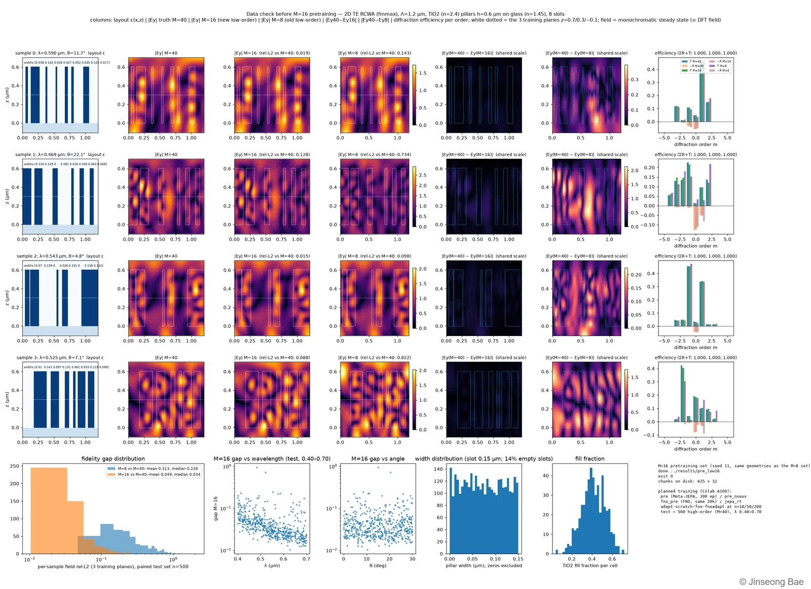
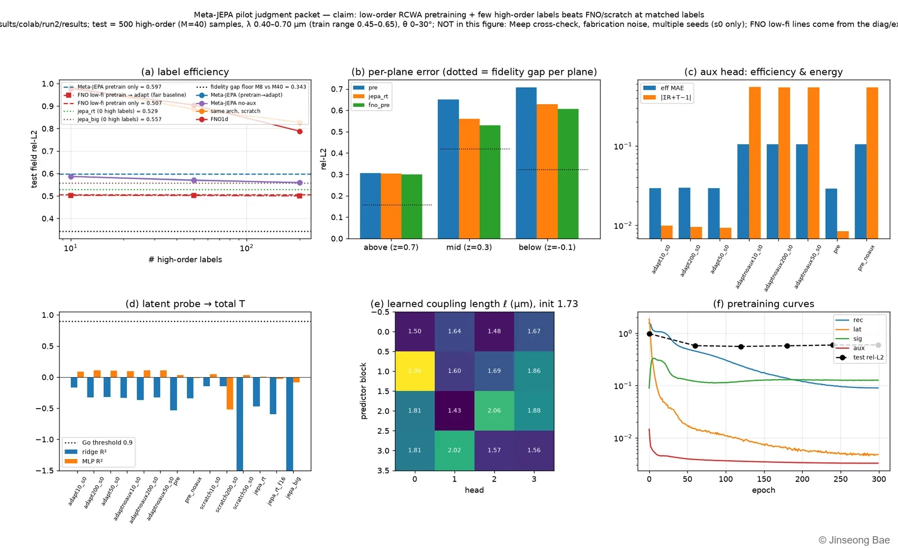
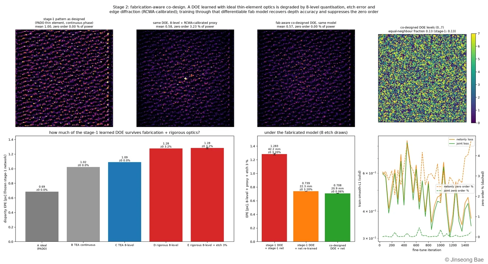

A. Meta-JEPA pilot — No-go, and why
High-fidelity RCWA is expensive. If a latent representation is learned from tens of thousands of cheap low-order RCWA runs and then adapted with 50 or fewer high-order labels, does it become a usable surrogate? I fixed the Go criteria before starting: with 50 or fewer labels, error at most half that of an FNO, and a latent-representation probe R² of 0.9 or higher.
The conclusion is No-go. The more important result is isolating why it fails. At first I attributed it to the fidelity gap between low and high order, but the error stayed the same in a test that removed that gap, so the cause was generalization to unseen geometries.
Setup
| Physics model | 2D TE, fmmax RCWA. Period 1.2 µm, TiO₂ (n 2.4) pillars in 8 slots (16 parameters: widths and offsets), height 0.6 µm, glass substrate n 1.45 |
|---|---|
| Conditions | λ 0.40–0.70 µm, incidence angle 0–30° |
| Fidelity | Low order M = 8 → M = 16, high order M = 40 (half-width of Fourier orders) |
| Outputs | Near fields Ey·Hx·Hz on three planes and diffraction efficiencies for |m| ≤ 3 |
| Data | Pretraining: 20,000 low order (λ 0.45–0.65) · adaptation: up to 200 high order · test: 500 high order (including out-of-range wavelengths) |
| Model | 3.0M parameters. Slot transformer encoder, (λ, θ)-conditioned predictor, INR decoder, auxiliary efficiency head. Baselines: 1D FNO; training from scratch |
| Error metric | Relative L2 of the test near fields (0.5 ≈ 50 %) |


Results and isolating the cause
| M = 8 pretraining | Meta-JEPA 0.597 → 0.559 after adapting on 200 · FNO 0.507 → 0.500. Probe R² about 0.1 |
|---|---|
| M = 16 pretraining | FNO 0.532 · Meta-JEPA 0.538 → 0.525 after adaptation · high-order labels only 0.788 · large FNO (width 256) 0.478 |
| Learning curve (FNO) | N = 2.5k/5k/10k/20k → 0.610/0.579/0.560/0.532, error ∝ N−0.07 |
| Residual learning | Feeding the low-order solution as input and learning only the difference to high order: 0.313 → 0.251 (M = 8), 0.049 → 0.039 (M = 16) |
The control experiment that identified the cause
If the fidelity gap were the cause, the error should drop sharply on a held-out test solved at the same low order as training (M = 16) instead of high order. The result was 0.529, almost the same. The error remains even with the fidelity gap set to zero, so the remaining error is generalization error on new geometries. This experiment overturned my first judgment at M = 8 that "the fidelity gap dominates".



Not every model stalled near 0.5. The large FNO went down to 0.478, but with a training loss of 0.0003 it was overfitting. So I write "≈ 0.48–0.54".
B. Differentiable imaging — HW·SW co-design with a fabrication model
I reproduced learned structured-light stereo (Polka Lines, CVPR 2021) in simplified form with the open-source PADO. A diffractive optical element (DOE) projects a dot pattern, and a neural network recovers depth from two camera images. The problem is that a DOE trained with an ideal thin-element model breaks down once it goes through real fabrication (8-level height quantization, etch error, edge diffraction).
So I made an RCWA-calibrated fabrication model differentiable and put it in the training loop. In particular, I looked at how much zero-order leakage (light that passes straight through without being diffracted), which bears directly on eye safety, is reduced.
Setup
| Optics | 940 nm, DOE 128 × 128 (pitch 1.5 µm), field of view 36°, camera baseline 50 mm, depth 0.2–1 m, Fraunhofer propagation |
|---|---|
| Sensor | 1/z² falloff, Gaussian blur σ 0.7, shot and read noise, saturation |
| Fabrication model | Edge proxy calibrated with my own 1D RCWA (S-matrix + Li factorization). Fused silica n 1.451, 8 height levels, etch error σ 3 % |
| Reconstruction network | Correlation cost volume → 2D U-Net → soft-argmin |
| Loss | smooth-L1(disparity) + 200 · max(0, zero order − 0.5 %) |


Results


| Fabrication effect breakdown | EPE 0.69 (ideal) → 1.02 → 1.09 → 1.28 → 1.28 px (in order: 8 levels, rigorous model, etch error) |
|---|---|
| Only the network retrained | EPE 0.739 px, zero order unchanged at 3.2 % |
| DOE co-designed as well | EPE 0.708 px, zero order 0.06 % (mean of 8 runs 0.00063 ± 0.00060) |
The control separated the roles. Most of the depth-error recovery comes from the neural network, and the zero-order suppression comes from the hardware (DOE). The fraction of same-height neighbors stays at 0.13, so the zero-order suppression was obtained by adjusting the phase balance, not by making the structure smoother.
Limitations and non-claims
Claims
- Isolated with a control experiment that the Meta-JEPA failure is caused by geometry generalization, not fidelity
- Putting a fabrication model into training can reduce zero-order leakage on the hardware side
Non-claims
- Meta-JEPA used 1 seed; there is no Meep cross-check and no test on aperiodic structures
- The full co-designed DOE was not computed full-wave (5 cells checked in 2D)
- The extra depth-accuracy gain from co-designing the DOE is small, 0.03 px
- No fabrication or real captures were done
Code structure
Meta-JEPA
data/gen_fmmax.py— RCWA data generation (checks R + T = 1 ± 1e-14)model/metajepa.py,train.py— model, plus pretraining, adaptation, FNO and residual modesrun_m16*.py,make_figure*.py— rerun and judgment figures
Differentiable imaging
stage1_polka/model.py,train.py— structured-light stereo reproductionstage2_fab/rcwa1d.py,proxy.py,fabsim.py— RCWA and fabrication proxystage2_fab/train_fab.py --mode joint,eval_fab.py— co-design and evaluation
Work done from 31 October to 2 November 2026. The differentiable imaging part used only public material (PADO, Polka Lines, DPS).